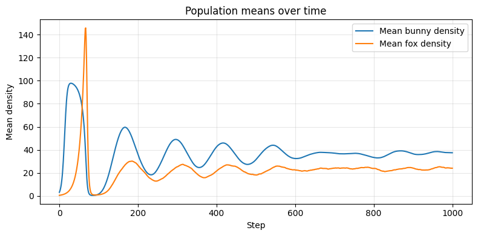
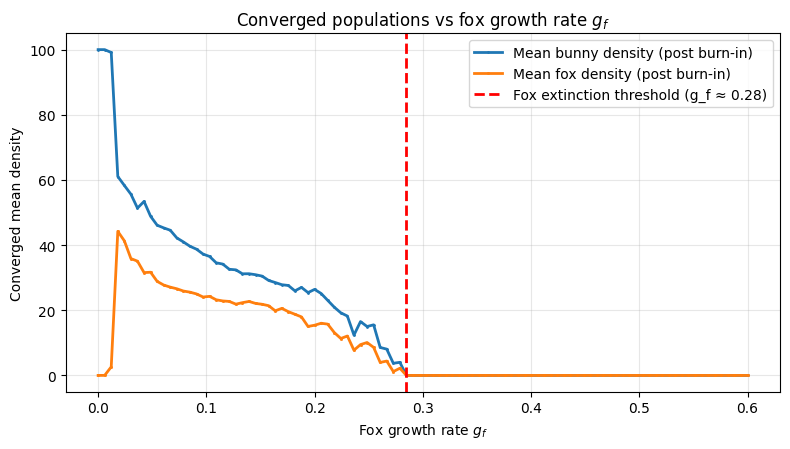
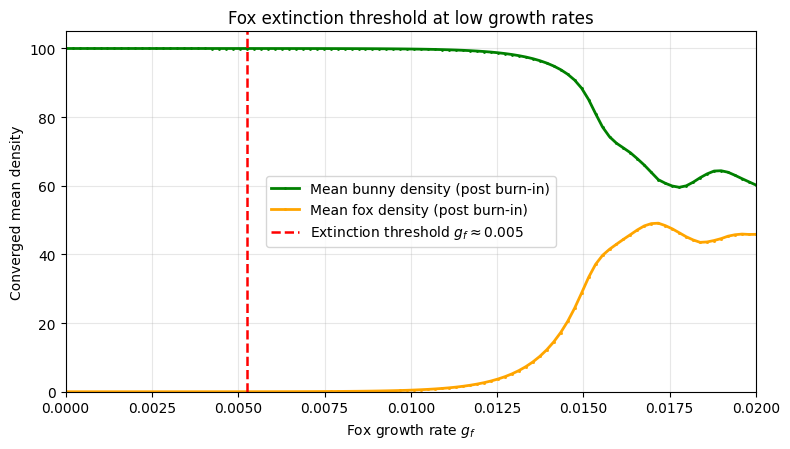
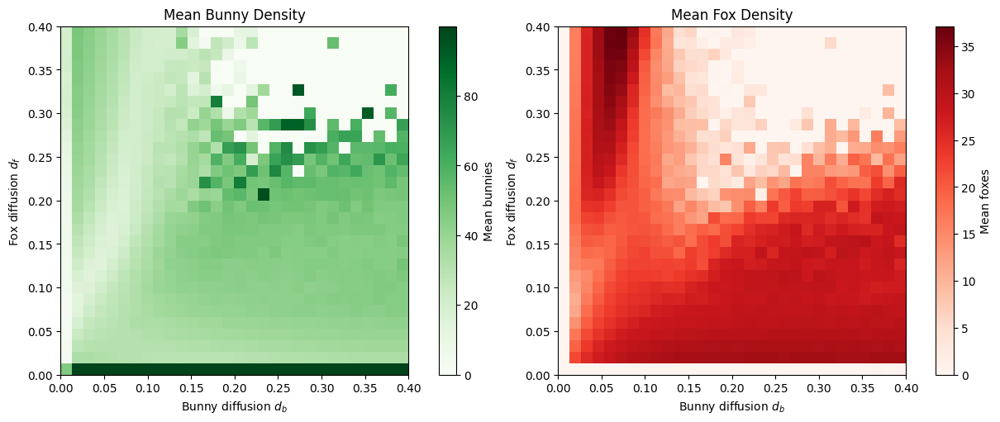
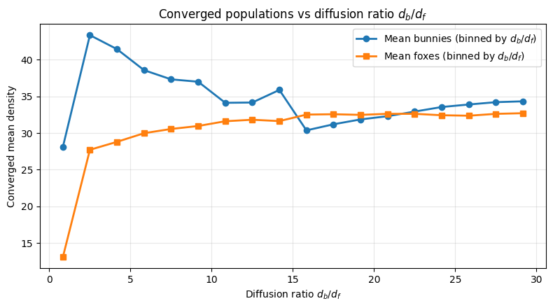
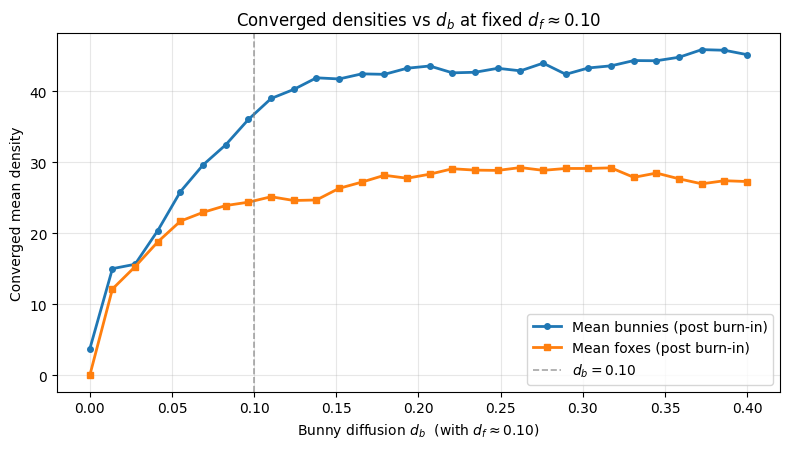
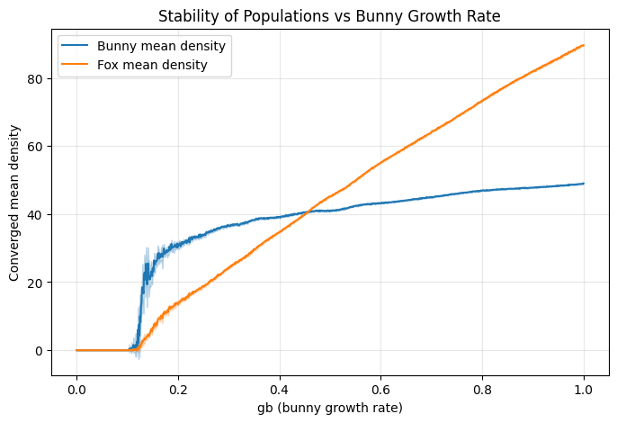
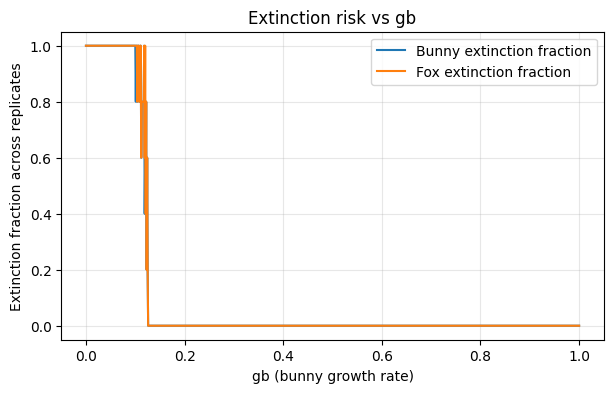
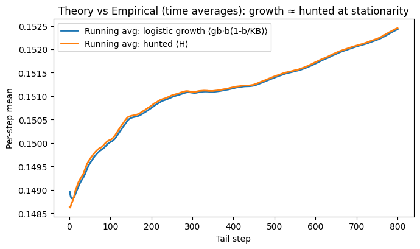
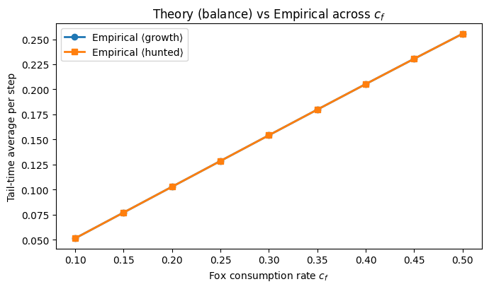

# Predator–Prey Ecosystem Simulation (Task 1)
# - 2D grid with real-valued bunny density b ∈ [0, 100] and fox density F ≥ 0
# - Update order per step:
# (1) bunny logistic growth → (2) bunny diffusion → (3) hunting/survival/reproduction + rare fox wipeout → (4) fox diffusion
# - Diffusion: fraction d moves out, split equally to 4 neighbors (d/4 each); origin keeps (1-d)
# - Initialize with small random populations
# - Real-time visualization or save animation
from __future__ import annotations
import numpy as np
import matplotlib.pyplot as plt
from matplotlib import animation
# Parameters
GRID_H, GRID_W = 200, 200
KB = 100.0 # bunny carrying capacity (fixed, local cap)
gb = 0.30 # bunny growth rate
db = 0.10 # bunny diffusion rate
cf = 0.10 # fox consumption rate (bunnies needed per fox)
gf = 0.10 # fox growth rate (applied to surviving foxes)
mf = 0.01 # fox catastrophic mortality prob (per cell, per step)
df = 0.10 # fox diffusion rate
T_STEPS = 600 # number of steps to simulate
SEED = 42 # RNG seed for reproducibility
# Utilities
def init_grid(h: int, w: int, rng: np.random.Generator) -> tuple[np.ndarray, np.ndarray]:
"""Initialize bunnies and foxes with small random densities."""
b = rng.uniform(0.0, 5.0, size=(h, w)) # small bunny population
F = rng.uniform(0.0, 1.0, size=(h, w)) # small fox population
return b.astype(np.float32), F.astype(np.float32)
def diffuse_four(field: np.ndarray, d: float) -> np.ndarray:
"""
Conservative 4-neighbor diffusion on a torus (wrap boundaries).
A fraction d leaves each cell and is split equally to 4 neighbors (d/4 each).
The cell keeps (1-d) of its content.
"""
if d <= 0.0:
return field
keep = (1.0 - d) * field
share = (d / 4.0) * field
# Wrap neighbors
up = np.roll(share, +1, axis=0)
down = np.roll(share, -1, axis=0)
left = np.roll(share, +1, axis=1)
right = np.roll(share, -1, axis=1)
return keep + up + down + left + right
def step(b: np.ndarray, F: np.ndarray, rng: np.random.Generator) -> tuple[np.ndarray, np.ndarray]:
"""
One simulation step applying rules in the required order:
1) Bunny logistic growth with cap KB.
2) Bunny diffusion (rate db).
3) Hunting + fox survival + fox reproduction + rare wipeout (mf).
4) Fox diffusion (rate df).
"""
# 1) Bunny logistic growth: b <- b + gb*b*(1 - b/KB), then clip to [0, KB]
b = b + gb * b * (1.0 - b / KB)
b = np.clip(b, 0.0, KB, out=b)
# 2) Bunny diffusion (4-neighbors)
b = diffuse_four(b, db)
# 3) Hunting & fox update
# Bunnies hunted (cannot exceed available bunnies; foxes "demand" cf*F)
demanded = cf * F
H = np.minimum(b, demanded) # hunted bunnies
b = b - H # remove hunted bunnies
# Surviving foxes equal H / cf (those who ate enough)
F_surv = H / cf # safe even if F=0 because then H=0
# Reproduction from survivors
F = F_surv * (1.0 + gf)
# Catastrophic mortality: per-cell wipeout with probability mf
if mf > 0.0:
wipe_mask = rng.random(F.shape) < mf
F[wipe_mask] = 0.0
# 4) Fox diffusion (4-neighbors)
F = diffuse_four(F, df)
# Safety: numerical hygiene
np.maximum(b, 0.0, out=b)
np.maximum(F, 0.0, out=F)
return b, F
# Run loop + visualization
_LIVE_ANIMS = []
def run_simulation(
steps=T_STEPS, grid_h=GRID_H, grid_w=GRID_W, save_path=None, dpi=120,
*, gb=gb, KB=KB, db=db, cf=cf, gf=gf, mf=mf, df=df, seed=SEED,
return_history=False,
):
"""
Run the predator-prey (bunnies-foxes) ecosystem simulation on a 2D grid.
This function implements all four update stages each timestep:
1. Bunny logistic growth with local carrying capacity (KB).
2. Bunny diffusion to neighboring cells.
3. Fox hunting, survival, reproduction, and random mortality.
4. Fox diffusion to neighboring cells.
Parameters
----------
steps : int
Number of simulation steps to run (default 600).
grid_h, grid_w : int
Height and width of the simulation grid.
save_path : str or None
Optional file path to save the animation ('.gif' or '.mp4').
If None, the animation is displayed interactively.
dpi : int
Resolution for saved animation (only used if save_path is given).
gb : float
Bunny growth rate (fractional per step).
KB : float
Bunny carrying capacity.
db : float
Bunny diffusion rate (fraction of population that moves per step).
cf : float
Fox consumption rate (bunnies eaten per fox per step).
gf : float
Fox growth rate (offspring per surviving fox per step).
mf : float
Fox catastrophic mortality probability (per cell per step).
df : float
Fox diffusion rate.
seed : int
Random number generator seed for reproducibility.
return_history : bool
If True, also returns per-step mean bunny and fox densities.
Returns
-------
fig : matplotlib.figure.Figure
Figure object used for animation.
anim : matplotlib.animation.FuncAnimation
Animation object.
b, F : np.ndarray
Final 2D arrays of bunny and fox densities.
mean_b_hist, mean_F_hist : np.ndarray (optional)
Arrays of per-step mean densities if `return_history=True`.
"""
rng = np.random.default_rng(seed)
b, F = init_grid(grid_h, grid_w, rng) # random initialization
# Create side-by-side visual panels for bunnies and foxes
fig, (ax_b, ax_f) = plt.subplots(1, 2, figsize=(10, 5), constrained_layout=True)
im_b = ax_b.imshow(b, vmin=0.0, vmax=KB, interpolation="nearest", cmap="Greens")
im_f = ax_f.imshow(F, vmin=0.0, vmax=max(1.0, F.max()), interpolation="nearest", cmap="Reds")
ax_b.set_title("Bunnies (density)")
ax_f.set_title("Foxes (density)")
ax_b.axis("off")
ax_f.axis("off")
# Arrays for tracking mean population densities over time
mean_b_hist, mean_F_hist = [], []
# Define update rule for each animation frame
def update(_frame):
nonlocal b, F
# Apply full predator–prey step logic
b, F = step(b, F, rng, gb=gb, KB=KB, db=db, cf=cf, gf=gf, mf=mf, df=df)
# Record global mean densities (for plotting later)
mean_b_hist.append(float(b.mean()))
mean_F_hist.append(float(F.mean()))
# Update displayed grids
im_b.set_data(b)
im_f.set_clim(vmin=0.0, vmax=max(1.0, float(np.quantile(F, 0.995)))) # adaptive color range
im_f.set_data(F)
return (im_b, im_f)
# Create live animation
anim = animation.FuncAnimation(fig, update, frames=steps, interval=30, blit=False)
# Handle output behavior
if save_path:
# Save as GIF or MP4 depending on file extension
if save_path.lower().endswith(".gif"):
anim.save(save_path, writer="pillow", dpi=dpi)
else:
anim.save(save_path, writer=animation.FFMpegWriter(fps=30), dpi=dpi)
plt.close(fig)
else:
# Keep animation object alive for interactive rendering
_LIVE_ANIMS.append(anim)
# Return results, optionally with time-series data
if return_history:
return fig, anim, b, F, np.array(mean_b_hist), np.array(mean_F_hist)
return fig, anim, b, Ffig, anim, b, F, mean_b, mean_F = run_simulation(
steps=1000,
save_path="./trial4.gif",
return_history=True
)
# Plot the recorded means
plt.figure(figsize=(8,4))
plt.plot(mean_b, label="Mean bunny density")
plt.plot(mean_F, label="Mean fox density")
plt.xlabel("Step"); plt.ylabel("Mean density")
plt.title("Population means over time")
plt.legend(); plt.grid(alpha=0.3); plt.tight_layout()
plt.show()
print("Final mean bunny density:", np.mean(b))
print("Final mean fox density:", np.mean(F))
Final mean bunny density: 37.488525 Final mean fox density: 24.081635
# Task 2: Parameter Study. Q1
import numpy as np
import matplotlib.pyplot as plt
def _pure_step(b, F, rng, *, gb, KB, db, cf, gf, mf, df):
"""
A pure, parameterized step function (duplicate of Task 1 logic)
that does not rely on global variables or animation.
"""
# 1) Bunny logistic growth: b <- b + gb*b*(1 - b/KB), then clip to [0, KB]
b = b + gb * b * (1.0 - b / KB)
b = np.clip(b, 0.0, KB, out=b)
# 2) Bunny diffusion (4-neighbors, toroidal)
def diffuse_four(field, d):
if d <= 0.0:
return field
keep = (1.0 - d) * field
share = (d / 4.0) * field
up = np.roll(share, +1, axis=0)
down = np.roll(share, -1, axis=0)
left = np.roll(share, +1, axis=1)
right = np.roll(share, -1, axis=1)
return keep + up + down + left + right
b = diffuse_four(b, db)
# 3) Hunting + fox survival + reproduction + catastrophic mortality
demanded = cf * F
H = np.minimum(b, demanded) # bunnies hunted
b = b - H
F_surv = H / cf # survivors = H/cf
F = F_surv * (1.0 + gf)
if mf > 0.0:
F = np.where(rng.random(F.shape) < mf, 0.0, F)
# 4) Fox diffusion
F = diffuse_four(F, df)
np.maximum(b, 0.0, out=b)
np.maximum(F, 0.0, out=F)
return b, F
def run_headless_once(
*,
grid_h=120, grid_w=120, seed=42,
steps=800, burn_in=300, avg_len=200,
gb=0.30, KB=100.0, db=0.10, cf=0.10, gf=0.10, mf=0.01, df=0.10,
init_b_range=(0.0, 5.0), init_F_range=(0.0, 1.0),
):
"""
Run a single simulation without animation and return mean densities
averaged over the last `avg_len` steps (after `burn_in`).
Parameters
----------
grid_h, grid_w : int
Grid dimensions.
seed : int
RNG seed for reproducibility.
steps : int
Total number of integration steps to perform (>= burn_in + avg_len).
burn_in : int
Steps to discard before averaging (let transients die out).
avg_len : int
Number of final steps over which to average mean densities.
gb, KB, db, cf, gf, mf, df : float
Model parameters.
init_b_range, init_F_range : (float, float)
Uniform ranges for random initialization of bunnies and foxes.
Returns
-------
mean_b : float
Mean bunny density averaged over the last `avg_len` steps.
mean_F : float
Mean fox density averaged over the last `avg_len` steps.
"""
assert steps >= burn_in + avg_len, "steps must be >= burn_in + avg_len"
rng = np.random.default_rng(seed)
b = rng.uniform(*init_b_range, size=(grid_h, grid_w)).astype(np.float32)
F = rng.uniform(*init_F_range, size=(grid_h, grid_w)).astype(np.float32)
# Burn-in
for _ in range(burn_in):
b, F = _pure_step(b, F, rng, gb=gb, KB=KB, db=db, cf=cf, gf=gf, mf=mf, df=df)
# Rolling average over the tail
mb = 0.0; mF = 0.0
for _ in range(avg_len):
b, F = _pure_step(b, F, rng, gb=gb, KB=KB, db=db, cf=cf, gf=gf, mf=mf, df=df)
mb += float(b.mean())
mF += float(F.mean())
mean_b = mb / avg_len
mean_F = mF / avg_len
return mean_b, mean_F
def parameter_sweep_2d(
gf_values, df_values,
*,
grid_h=120, grid_w=120, seed=42,
steps=800, burn_in=300, avg_len=200,
gb=0.30, KB=100.0, db=0.10, cf=0.10, mf=0.01,
init_b_range=(0.0, 5.0), init_F_range=(0.0, 1.0),
):
"""
Sweep two parameters (g_f on x-axis, d_f on y-axis) and collect
mean densities as a pair of heatmaps.
Returns
-------
mean_bunnies : (len(df_values), len(gf_values)) ndarray
mean_foxes : (len(df_values), len(gf_values)) ndarray
"""
mean_bunnies = np.zeros((len(df_values), len(gf_values)), dtype=np.float32)
mean_foxes = np.zeros((len(df_values), len(gf_values)), dtype=np.float32)
for i, d_f in enumerate(df_values):
for j, g_f in enumerate(gf_values):
mb, mF = run_headless_once(
grid_h=grid_h, grid_w=grid_w, seed=seed + 17*i + j,
steps=steps, burn_in=burn_in, avg_len=avg_len,
gb=gb, KB=KB, db=db, cf=cf, gf=g_f, mf=mf, df=d_f,
init_b_range=init_b_range, init_F_range=init_F_range,
)
mean_bunnies[i, j] = mb
mean_foxes[i, j] = mF
# Optional progress print:
# print(f"gf={g_f:.3f}, df={d_f:.3f} -> mean b={mb:.2f}, F={mF:.2f}")
return mean_bunnies, mean_foxes
def plot_sweep_heatmaps(mean_bunnies, mean_foxes, gf_values, df_values):
"""
Heatmaps for mean densities vs (g_f, d_f).
"""
fig, axes = plt.subplots(1, 2, figsize=(12, 5), constrained_layout=True)
# Bunnies
im0 = axes[0].imshow(
mean_bunnies, origin="lower", aspect="auto", cmap="Greens",
extent=[gf_values.min(), gf_values.max(), df_values.min(), df_values.max()],
)
axes[0].set_title("Mean Bunny Density")
axes[0].set_xlabel("Fox Growth Rate (g_f)")
axes[0].set_ylabel("Fox Diffusion Rate (d_f)")
c0 = fig.colorbar(im0, ax=axes[0], label="Mean bunnies")
# Foxes
im1 = axes[1].imshow(
mean_foxes, origin="lower", aspect="auto", cmap="Reds",
extent=[gf_values.min(), gf_values.max(), df_values.min(), df_values.max()],
)
axes[1].set_title("Mean Fox Density")
axes[1].set_xlabel("Fox Growth Rate (g_f)")
axes[1].set_ylabel("Fox Diffusion Rate (d_f)")
c1 = fig.colorbar(im1, ax=axes[1], label="Mean foxes")
plt.show()
return fig
# Run the Task 2 experiment
# Choose two parameters to sweep
gf_values = np.linspace(0.00, 0.60, 30) # fox growth 0.00 → 0.60
df_values = np.linspace(0.00, 0.30, 30) # fox diffusion 0.00 → 0.30
mean_bunnies, mean_foxes = parameter_sweep_2d(
gf_values, df_values,
grid_h=200, grid_w=200,
steps=1000, burn_in=650, avg_len=350,
gb=gb, KB=KB, db=db, cf=cf, mf=mf,
init_b_range=(0.0, 5.0), # b in [0,5]
init_F_range=(0.0, 1.0), # F in [0,1]
)
fig = plot_sweep_heatmaps(mean_bunnies, mean_foxes, gf_values, df_values)
import numpy as np
import matplotlib.pyplot as plt
gf_list = np.linspace(0.00, 0.60, 100)
mean_b_vals = []
mean_F_vals = []
for gf_val in gf_list:
mb, mF = run_headless_once(
grid_h=200, grid_w=200, seed=123, # same seed -> identical initial state each run
steps=1000, burn_in=650, avg_len=350, # use all post-burn-in steps
gb=0.30, KB=100.0, db=0.10, cf=0.10, gf=gf_val, mf=0.01, df=0.10,
init_b_range=(0.0, 5.0), init_F_range=(0.0, 1.0),
)
mean_b_vals.append(mb)
mean_F_vals.append(mF)
gf_arr = np.array(gf_list, float)
mean_b = np.array(mean_b_vals, float)
mean_F = np.array(mean_F_vals, float)threshold = 1e-2 # fox extinction threshold
# find indices where fox density < threshold after g_f = 0.02
mask_after = gf_arr > 0.02
valid_idxs = np.where(mask_after & (mean_F < threshold))[0]
# pick the first such index
collapse_idx = valid_idxs[0] if len(valid_idxs) > 0 else None
collapse_gf = gf_arr[collapse_idx] if collapse_idx is not None else None
# Plot
plt.figure(figsize=(8,4.6))
plt.plot(gf_arr, mean_b, 'o-', lw=2, markersize=1, label='Mean bunny density (post burn-in)')
plt.plot(gf_arr, mean_F, 's-', lw=2, markersize=1, label='Mean fox density (post burn-in)')
# add red threshold line
if collapse_gf is not None:
plt.axvline(collapse_gf, color='red', linestyle='--', lw=2,
label=f'Fox extinction threshold (g_f ≈ {collapse_gf:.2f})')
plt.xlabel(r'Fox growth rate $g_f$')
plt.ylabel('Converged mean density')
plt.title('Converged populations vs fox growth rate $g_f$')
plt.grid(alpha=0.3)
plt.legend()
plt.tight_layout()
plt.show()

gf_list = np.linspace(0.00, 0.02, 100)
mean_b_vals = []
mean_F_vals = []
for gf_val in gf_list:
mb, mF = run_headless_once(
grid_h=200, grid_w=200, seed=123, # same seed -> identical initial state each run
steps=1000, burn_in=650, avg_len=350, # use all post-burn-in steps
gb=0.30, KB=100.0, db=0.10, cf=0.10, gf=gf_val, mf=0.01, df=0.10,
init_b_range=(0.0, 5.0), init_F_range=(0.0, 1.0),
)
mean_b_vals.append(mb)
mean_F_vals.append(mF)
gf_arr = np.array(gf_list, float)
mean_b = np.array(mean_b_vals, float)
mean_F = np.array(mean_F_vals, float)import numpy as np
import matplotlib.pyplot as plt
# Identify extinction threshold
# Define extinction tolerance (below this, foxes considered extinct)
extinction_tol = 1e-2
# Find first g_f value where fox mean density exceeds tolerance
nonzero_idx = np.where(mean_F > extinction_tol)[0]
gf_threshold = gf_arr[nonzero_idx[0]] if len(nonzero_idx) > 0 else np.nan
plt.figure(figsize=(8, 4.6))
plt.plot(gf_arr, mean_b, 'o-', lw=2, markersize=1, color='green', label='Mean bunny density (post burn-in)')
plt.plot(gf_arr, mean_F, 's-', lw=2, markersize=1, color='orange', label='Mean fox density (post burn-in)')
# Add extinction threshold line
if not np.isnan(gf_threshold):
plt.axvline(gf_threshold, color='red', linestyle='--', lw=1.8,
label=fr'Extinction threshold $g_f \approx {gf_threshold:.3f}$')
plt.xlim(0.0, 0.02)
plt.ylim(bottom=0)
plt.xlabel(r'Fox growth rate $g_f$')
plt.ylabel('Converged mean density')
plt.title('Fox extinction threshold at low growth rates')
plt.grid(alpha=0.3)
plt.legend()
plt.tight_layout()
plt.show()
print(f"Estimated extinction threshold: g_f ≈ {gf_threshold:.3f}")

Estimated extinction threshold: g_f ≈ 0.005
import numpy as np
import matplotlib.pyplot as plt
# Sweep db vs df
def diffusion_sweep_2d(
db_values, df_values,
*,
grid_h=200, grid_w=200, seed=42,
steps=1000, burn_in=650, avg_len=350,
gb=0.30, KB=100.0, cf=0.10, gf=0.10, mf=0.01,
init_b_range=(0.0,5.0), init_F_range=(0.0,1.0),
):
"""
Sweep bunny diffusion (db) on the x-axis and fox diffusion (df) on the y-axis.
Returns mean density heatmaps and the ratio matrix r = db/df for downstream plots.
"""
mean_bunnies = np.zeros((len(df_values), len(db_values)), dtype=np.float32)
mean_foxes = np.zeros((len(df_values), len(db_values)), dtype=np.float32)
ratio_db_df = np.zeros_like(mean_bunnies, dtype=np.float32)
for i, d_f in enumerate(df_values):
for j, d_b in enumerate(db_values):
mb, mF = run_headless_once(
grid_h=grid_h, grid_w=grid_w, seed=seed + 17*i + j,
steps=steps, burn_in=burn_in, avg_len=avg_len,
gb=gb, KB=KB, db=d_b, cf=cf, gf=gf, mf=mf, df=d_f,
init_b_range=init_b_range, init_F_range=init_F_range,
)
mean_bunnies[i, j] = mb
mean_foxes[i, j] = mF
ratio_db_df[i, j] = np.inf if d_f == 0 else (d_b / d_f)
return mean_bunnies, mean_foxes, ratio_db_df
def plot_diffusion_heatmaps(mean_bunnies, mean_foxes, db_values, df_values):
"""
Heatmaps with db on x-axis and df on y-axis.
"""
fig, axes = plt.subplots(1, 2, figsize=(12,5), constrained_layout=True)
im0 = axes[0].imshow(
mean_bunnies, origin="lower", aspect="auto", cmap="Greens",
extent=[db_values.min(), db_values.max(), df_values.min(), df_values.max()],
)
axes[0].set_title("Mean Bunny Density")
axes[0].set_xlabel("Bunny diffusion $d_b$")
axes[0].set_ylabel("Fox diffusion $d_f$")
fig.colorbar(im0, ax=axes[0], label="Mean bunnies")
im1 = axes[1].imshow(
mean_foxes, origin="lower", aspect="auto", cmap="Reds",
extent=[db_values.min(), db_values.max(), df_values.min(), df_values.max()],
)
axes[1].set_title("Mean Fox Density")
axes[1].set_xlabel("Bunny diffusion $d_b$")
axes[1].set_ylabel("Fox diffusion $d_f$")
fig.colorbar(im1, ax=axes[1], label="Mean foxes")
plt.show()
return fig
# Plot densities vs the ratio r = db/df
def plot_vs_ratio(mean_bunnies, mean_foxes, ratio_db_df, nbins=20, r_max=10.0):
"""
Flatten the (db, df) grid, bin by r = db/df, and plot mean densities vs ratio.
r_max truncates extreme ratios to keep the x-axis readable (e.g., when df≈0).
"""
r = ratio_db_df.ravel()
b = mean_bunnies.ravel()
F = mean_foxes.ravel()
# keep finite ratios and within cap
m = np.isfinite(r) & (r >= 0) & (r <= r_max)
r, b, F = r[m], b[m], F[m]
# bin edges and indices
edges = np.linspace(0, r_max, nbins+1)
idx = np.digitize(r, edges) - 1
# bin centers
centers = 0.5*(edges[:-1] + edges[1:])
b_avg = np.full(nbins, np.nan, float)
F_avg = np.full(nbins, np.nan, float)
for k in range(nbins):
mk = idx == k
if mk.any():
b_avg[k] = np.mean(b[mk])
F_avg[k] = np.mean(F[mk])
plt.figure(figsize=(8,4.5))
plt.plot(centers, b_avg, 'o-', lw=2, label="Mean bunnies (binned by $d_b/d_f$)")
plt.plot(centers, F_avg, 's-', lw=2, label="Mean foxes (binned by $d_b/d_f$)")
plt.xlabel("Diffusion ratio $d_b/d_f$")
plt.ylabel("Converged mean density")
plt.title("Converged populations vs diffusion ratio $d_b/d_f$")
plt.grid(alpha=0.3)
plt.legend()
plt.tight_layout()
plt.show()
db_values = np.linspace(0.00, 0.40, 30) # sweep bunny diffusion
df_values = np.linspace(0.00, 0.40, 30) # sweep fox diffusion
mean_b_dbdf, mean_F_dbdf, ratio_dbdf = diffusion_sweep_2d(
db_values, df_values,
grid_h=200, grid_w=200,
steps=1000, burn_in=650, avg_len=350,
gb=gb, KB=KB, cf=cf, gf=0.10, mf=mf,
init_b_range=(0.0,5.0), init_F_range=(0.0,1.0),
)
_ = plot_diffusion_heatmaps(mean_b_dbdf, mean_F_dbdf, db_values, df_values)
plot_vs_ratio(mean_b_dbdf, mean_F_dbdf, ratio_dbdf, nbins=30, r_max=50.0)
import numpy as np
import matplotlib.pyplot as plt
# Pick the row closest to df_target
df_target = 0.10
i = np.argmin(np.abs(df_values - df_target))
db_axis = db_values
b_row = mean_b_dbdf[i, :] # bunnies at df ≈ 0.10
F_row = mean_F_dbdf[i, :] # foxes at df ≈ 0.10
plt.figure(figsize=(8,4.6))
plt.plot(db_axis, b_row, 'o-', lw=2, markersize=4, label='Mean bunnies (post burn-in)')
plt.plot(db_axis, F_row, 's-', lw=2, markersize=4, label='Mean foxes (post burn-in)')
plt.axvline(0.10, color='gray', lw=1.2, ls='--', alpha=0.7, label=r'$d_b=0.10$')
plt.xlabel(r'Bunny diffusion $d_b$ (with $d_f \approx 0.10$)')
plt.ylabel('Converged mean density')
plt.title(r'Converged densities vs $d_b$ at fixed $d_f \approx 0.10$')
plt.grid(alpha=0.3)
plt.legend()
plt.tight_layout()
plt.show()
print(f"Plotted row index i={i}, using df_values[i]={df_values[i]:.3f}")

Plotted row index i=7, using df_values[i]=0.097
# Warning: Took 45 minutes to run on my laptop!
import numpy as np
import pandas as pd
import matplotlib.pyplot as plt
grid_h, grid_w = 200, 200
steps, burn_in, avg_len = 1000, 650, 350
gb_values = np.linspace(0.00, 1.00, 1000)
R = 5 # replicates per gb to gauge stability
# Fixed params
KB = 100.0
cf = 0.10
gf = 0.10
mf = 0.01
db = 0.10
df = 0.10
init_b_range = (0.0, 5.0)
init_F_range = (0.0, 1.0)
rows = []
rng = np.random.default_rng(123)
for gb in gb_values:
b_runs = []
F_runs = []
for r in range(R):
# different seed per replicate but deterministic overall
seed = int(rng.integers(0, 2**31 - 1))
mb, mF = run_headless_once(
grid_h=grid_h, grid_w=grid_w, seed=seed,
steps=steps, burn_in=burn_in, avg_len=avg_len,
gb=gb, KB=KB, db=db, cf=cf, gf=gf, mf=mf, df=df,
init_b_range=init_b_range, init_F_range=init_F_range,
)
b_runs.append(mb)
F_runs.append(mF)
b_runs = np.array(b_runs)
F_runs = np.array(F_runs)
rows.append({
"gb": gb,
"b_mean": b_runs.mean(),
"b_std": b_runs.std(ddof=1),
"F_mean": F_runs.mean(),
"F_std": F_runs.std(ddof=1),
# quick extinction flags
"b_ext_frac": (b_runs < 1e-3).mean(),
"F_ext_frac": (F_runs < 1e-3).mean(),
})
df_gb = pd.DataFrame(rows)
df_gb.head()
gb b_mean b_std F_mean F_std b_ext_frac F_ext_frac 0 0.000000 0.0 0.0 0.0 0.0 1.0 1.0 1 0.001001 0.0 0.0 0.0 0.0 1.0 1.0 2 0.002002 0.0 0.0 0.0 0.0 1.0 1.0 3 0.003003 0.0 0.0 0.0 0.0 1.0 1.0 4 0.004004 0.0 0.0 0.0 0.0 1.0 1.0
plt.figure(figsize=(8,5))
# Bunny curve (blue)
plt.plot(df_gb["gb"], df_gb["b_mean"], color="tab:blue", label="Bunny mean density")
plt.fill_between(df_gb["gb"],
df_gb["b_mean"] - df_gb["b_std"],
df_gb["b_mean"] + df_gb["b_std"],
color="tab:blue", alpha=0.25)
# Fox curve (orange)
plt.plot(df_gb["gb"], df_gb["F_mean"], color="tab:orange", label="Fox mean density")
plt.fill_between(df_gb["gb"],
df_gb["F_mean"] - df_gb["F_std"],
df_gb["F_mean"] + df_gb["F_std"],
color="tab:orange", alpha=0.25)
plt.xlabel("gb (bunny growth rate)")
plt.ylabel("Converged mean density")
plt.title("Stability of Populations vs Bunny Growth Rate")
plt.grid(True, alpha=0.3)
plt.legend()
plt.show()

plt.figure(figsize=(7,4))
plt.plot(df_gb["gb"], df_gb["b_ext_frac"], label="Bunny extinction fraction")
plt.plot(df_gb["gb"], df_gb["F_ext_frac"], label="Fox extinction fraction")
plt.xlabel("gb (bunny growth rate)")
plt.ylabel("Extinction fraction across replicates")
plt.title("Extinction risk vs gb")
plt.grid(True, alpha=0.3)
plt.legend()
plt.show()

def debug_check_bunny_balance(
*, steps=40, burn_in=10, tail=20,
grid_h=30, grid_w=30, seed=42,
gb=0.5, KB=100.0, db=0.10, cf=0.10, gf=0.1, mf=0.01, df=0.10,
init_b_range=(0.0,5.0), init_F_range=(0.0,1.0)
):
import numpy as np
def diffuse_four(field, d):
if d <= 0.0: return field
keep = (1.0 - d) * field
share = (d / 4.0) * field
up = np.roll(share, +1, axis=0)
down = np.roll(share, -1, axis=0)
left = np.roll(share, +1, axis=1)
right = np.roll(share, -1, axis=1)
return keep + up + down + left + right
assert steps >= burn_in + tail, f"steps({steps}) must be >= burn_in({burn_in}) + tail({tail})"
rng = np.random.default_rng(seed)
b = rng.uniform(*init_b_range, size=(grid_h, grid_w)).astype(np.float32)
F = rng.uniform(*init_F_range, size=(grid_h, grid_w)).astype(np.float32)
print(f"INIT -> mean b={b.mean():.3f}, mean F={F.mean():.3f}")
# testing
growth0 = gb * b * (1 - b/KB)
b0 = np.clip(b + growth0, 0, KB)
H0 = np.minimum(b0, cf*F)
F0 = (1 - mf) * (H0/cf) * (1 + gf)
print(f"DRY -> mean growth={growth0.mean():.4f}, mean H={H0.mean():.4f}, mean F_next={F0.mean():.4f}")
# burn in
for _ in range(burn_in):
growth = gb * b * (1 - b/KB)
b = np.clip(b + growth, 0, KB)
b = diffuse_four(b, db)
H = np.minimum(b, cf*F)
b = b - H
F = (1 - mf) * (H/cf) * (1 + gf)
F = diffuse_four(F, df)
print(f"AFTER BURN-IN -> mean b={b.mean():.3f}, mean F={F.mean():.3f}")
# tail averages
growth_sum = 0.0
hunt_sum = 0.0
for t in range(tail):
growth = gb * b * (1 - b/KB)
b = np.clip(b + growth, 0, KB)
b = diffuse_four(b, db)
H = np.minimum(b, cf*F)
b = b - H
F = (1 - mf) * (H/cf) * (1 + gf)
F = diffuse_four(F, df)
if t == 0:
print(f"TAIL t=0 -> mean growth={growth.mean():.4f}, mean H={H.mean():.4f}, mean b={b.mean():.3f}, mean F={F.mean():.3f}")
growth_sum += float(growth.mean())
hunt_sum += float(H.mean())
avg_growth = growth_sum / tail
avg_hunt = hunt_sum / tail
print(f"RESULT -> Avg bunny growth: {avg_growth:.6f} Avg hunted: {avg_hunt:.6f} Δ: {avg_growth - avg_hunt:.6f}")
return avg_growth, avg_hunt
# Run the debug with modest sizes to see live numbers:
debug_check_bunny_balance(
steps=40, burn_in=10, tail=20,
grid_h=30, grid_w=30,
gb=0.5, KB=100.0, db=0.10, cf=0.10, gf=0.1, mf=0.01, df=0.10,
init_b_range=(0.0,5.0), init_F_range=(0.0,1.0)
)
INIT -> mean b=2.482, mean F=0.508 DRY -> mean growth=1.1996, mean H=0.0506, mean F_next=0.5515 AFTER BURN-IN -> mean b=64.359, mean F=1.193 TAIL t=0 -> mean growth=10.9977, mean H=0.1193, mean b=75.237, mean F=1.299 RESULT -> Avg bunny growth: 2.027582 Avg hunted: 0.301697 Δ: 1.725885
(2.027581882476807, 0.30169683024287225)
def check_trend(
*, steps=200, burn_in=100,
grid_h=60, grid_w=60, seed=42,
gb=0.5, KB=100.0, db=0.10, cf=0.10, gf=0.1, mf=0.01, df=0.10,
init_b_range=(0.0,5.0), init_F_range=(0.0,1.0)
):
import numpy as np
def diffuse_four(field, d):
if d <= 0.0: return field
keep = (1.0 - d) * field
share = (d / 4.0) * field
up = np.roll(share, +1, axis=0)
down = np.roll(share, -1, axis=0)
left = np.roll(share, +1, axis=1)
right = np.roll(share, -1, axis=1)
return keep + up + down + left + right
rng = np.random.default_rng(seed)
b = rng.uniform(*init_b_range, size=(grid_h, grid_w)).astype(np.float32)
F = rng.uniform(*init_F_range, size=(grid_h, grid_w)).astype(np.float32)
# burn-in (stochastic wipeouts, like Task 1)
for _ in range(burn_in):
growth = gb * b * (1 - b/KB)
b = np.clip(b + growth, 0, KB)
b = diffuse_four(b, db)
H = np.minimum(b, cf*F)
b = b - H
F = (H / cf) * (1 + gf)
wipe = rng.random(F.shape) < mf
F[wipe] = 0.0
F = diffuse_four(F, df)
# tail means
means_b, means_F = [], []
for _ in range(steps):
growth = gb * b * (1 - b/KB)
b = np.clip(b + growth, 0, KB)
b = diffuse_four(b, db)
H = np.minimum(b, cf*F)
b = b - H
F = (H / cf) * (1 + gf)
wipe = rng.random(F.shape) < mf
F[wipe] = 0.0
F = diffuse_four(F, df)
means_b.append(float(b.mean()))
means_F.append(float(F.mean()))
# simple trend: last - first
db_mean = means_b[-1] - means_b[0]
dF_mean = means_F[-1] - means_F[0]
print(f"tail Δ mean b ≈ {db_mean:.3f}, Δ mean F ≈ {dF_mean:.3f}")
return np.array(means_b), np.array(means_F)
def check_bunny_balance_stochastic(
*, steps=1200, burn_in=400, tail=400,
grid_h=120, grid_w=120, seed=42,
gb=0.5, KB=100.0, db=0.10, cf=0.10, gf=0.1, mf=0.01, df=0.10,
init_b_range=(0.0,5.0), init_F_range=(0.0,1.0)
):
import numpy as np
def diffuse_four(field, d):
if d <= 0.0: return field
keep = (1.0 - d) * field
share = (d / 4.0) * field
up = np.roll(share, +1, axis=0)
down = np.roll(share, -1, axis=0)
left = np.roll(share, +1, axis=1)
right = np.roll(share, -1, axis=1)
return keep + up + down + left + right
rng = np.random.default_rng(seed)
b = rng.uniform(*init_b_range, size=(grid_h, grid_w)).astype(np.float32)
F = rng.uniform(*init_F_range, size=(grid_h, grid_w)).astype(np.float32)
# burn-in (stochastic)
for _ in range(burn_in):
growth = gb * b * (1 - b/KB)
b = np.clip(b + growth, 0, KB)
b = diffuse_four(b, db)
H = np.minimum(b, cf*F)
b = b - H
F = (H / cf) * (1 + gf)
wipe = rng.random(F.shape) < mf
F[wipe] = 0.0
F = diffuse_four(F, df)
growth_sum = 0.0
hunt_sum = 0.0
for _ in range(tail):
growth = gb * b * (1 - b/KB)
b = np.clip(b + growth, 0, KB)
b = diffuse_four(b, db)
H = np.minimum(b, cf*F)
b = b - H
F = (H / cf) * (1 + gf)
wipe = rng.random(F.shape) < mf
F[wipe] = 0.0
F = diffuse_four(F, df)
growth_sum += float(growth.mean())
hunt_sum += float(H.mean())
avg_growth = growth_sum / tail
avg_hunt = hunt_sum / tail
print(f"[stochastic] Avg growth={avg_growth:.4f} Avg hunted={avg_hunt:.4f} Δ={avg_growth-avg_hunt:.4f}")
return avg_growth, avg_hunt
avg_growth, avg_hunt = check_bunny_balance_stochastic(
gb=0.3, cf=0.3, gf=0.0101, mf=0.01, db=0.1, df=0.1,
burn_in=1000, tail=1000, steps=2000
)
[stochastic] Avg growth=0.1532 Avg hunted=0.1532 Δ=-0.0000
import numpy as np
import matplotlib.pyplot as plt
def plot_balance_trace_stochastic(
*, steps=2000, burn_in=1000, tail=800,
grid_h=120, grid_w=120, seed=42,
gb=0.30, KB=100.0, db=0.10, cf=0.30, gf=0.0101, mf=0.01, df=0.10,
init_b_range=(0.0,5.0), init_F_range=(0.0,1.0)
):
assert steps >= burn_in + tail, "steps must be ≥ burn_in + tail"
def diffuse_four(X, d):
if d <= 0.0: return X
keep = (1.0 - d) * X
share = (d / 4.0) * X
return keep + np.roll(share,+1,0)+np.roll(share,-1,0)+np.roll(share,+1,1)+np.roll(share,-1,1)
rng = np.random.default_rng(seed)
b = rng.uniform(*init_b_range, size=(grid_h,grid_w)).astype(np.float32)
F = rng.uniform(*init_F_range, size=(grid_h,grid_w)).astype(np.float32)
# burn-in (use exact Task-1 stochastic wipeout rule)
for _ in range(burn_in):
growth = gb * b * (1 - b/KB)
b = np.clip(b + growth, 0, KB); b = diffuse_four(b, db)
H = np.minimum(b, cf*F); b = b - H
F = (H/cf) * (1 + gf)
wipe = rng.random(F.shape) < mf
F[wipe] = 0.0
F = diffuse_four(F, df)
# tail running averages
g_run, h_run = [], []
g_cum = 0.0; h_cum = 0.0
for t in range(1, tail+1):
growth = gb * b * (1 - b/KB)
b = np.clip(b + growth, 0, KB); b = diffuse_four(b, db)
H = np.minimum(b, cf*F); b = b - H
F = (H/cf) * (1 + gf)
wipe = rng.random(F.shape) < mf
F[wipe] = 0.0
F = diffuse_four(F, df)
g_cum += float(growth.mean())
h_cum += float(H.mean())
g_run.append(g_cum / t)
h_run.append(h_cum / t)
# plot
t = np.arange(1, tail+1)
plt.figure(figsize=(7,4.2))
plt.plot(t, g_run, label="Running avg: logistic growth ⟨gb·b(1-b/KB)⟩", lw=2)
plt.plot(t, h_run, label="Running avg: hunted ⟨H⟩", lw=2)
plt.xlabel("Tail step")
plt.ylabel("Per-step mean")
plt.title("Theory vs Empirical (time averages): growth ≈ hunted at stationarity")
plt.legend()
plt.tight_layout()
plt.show()
plot_balance_trace_stochastic(
gb=0.30, cf=0.30, gf=0.0101, mf=0.01, db=0.10, df=0.10,
steps=2000, burn_in=1000, tail=800
)

def plot_theory_vs_empirical_curve(
cf_values,
*,
gb=0.30, KB=100.0, db=0.10, gf=0.0101, mf=0.01, df=0.10,
grid_h=100, grid_w=100, steps=1600, burn_in=800, tail=600,
seeds=(0,1,2),
init_b_range=(0.0,5.0), init_F_range=(0.0,1.0)
):
def diffuse_four(X, d):
if d <= 0.0: return X
keep = (1.0 - d) * X
share = (d / 4.0) * X
return keep + np.roll(share,+1,0)+np.roll(share,-1,0)+np.roll(share,+1,1)+np.roll(share,-1,1)
g_means = []; h_means = []
for cf in cf_values:
g_acc = 0.0; h_acc = 0.0; n = 0
for sd in seeds:
rng = np.random.default_rng(42+sd)
b = rng.uniform(*init_b_range, size=(grid_h,grid_w)).astype(np.float32)
F = rng.uniform(*init_F_range, size=(grid_h,grid_w)).astype(np.float32)
# burn-in
for _ in range(burn_in):
growth = gb * b * (1 - b/KB)
b = np.clip(b + growth, 0, KB); b = diffuse_four(b, db)
H = np.minimum(b, cf*F); b = b - H
F = (H/cf) * (1 + gf)
wipe = rng.random(F.shape) < mf
F[wipe] = 0.0
F = diffuse_four(F, df)
# tail averages
g_sum = 0.0; h_sum = 0.0
for _ in range(tail):
growth = gb * b * (1 - b/KB)
b = np.clip(b + growth, 0, KB); b = diffuse_four(b, db)
H = np.minimum(b, cf*F); b = b - H
F = (H/cf) * (1 + gf)
wipe = rng.random(F.shape) < mf
F[wipe] = 0.0
F = diffuse_four(F, df)
g_sum += float(growth.mean())
h_sum += float(H.mean())
g_acc += g_sum / tail
h_acc += h_sum / tail
n += 1
g_means.append(g_acc / n)
h_means.append(h_acc / n)
g_means = np.array(g_means); h_means = np.array(h_means)
# plot
plt.figure(figsize=(7,4.2))
plt.plot(cf_values, g_means, 'o-', lw=2, label="Empirical ⟨growth⟩")
plt.plot(cf_values, h_means, 's-', lw=2, label="Empirical ⟨hunted⟩")
plt.xlabel("Fox consumption rate $c_f$")
plt.ylabel("Tail-time average per step")
plt.title("Theory (balance) vs Empirical across $c_f$")
plt.legend()
plt.tight_layout()
plt.show()
# return the arrays for a numeric table
return cf_values, g_means, h_means
cf_vals = np.linspace(0.1, 0.5, 9)
_ = plot_theory_vs_empirical_curve(
cf_vals,
gb=0.30, gf=0.0101, mf=0.01, db=0.10, df=0.10,
steps=1600, burn_in=800, tail=600, seeds=(0,1,2)
)
